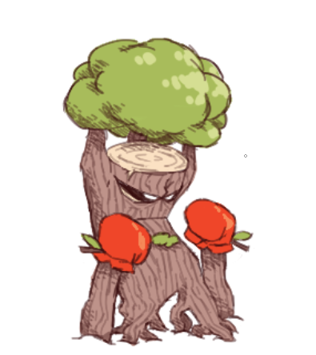

Fakemon
One of the contests hosted on the Silk Rock Discord server is Fakemon design, in which contestants design Fakemon and then vote for the best one at the end of the design period.
Round 1
1st Place (tie)
Gabbunel
Author: Rebmiami
1st Place (tie)
Elemikyu
Author: Ninanite
3rd Place
Musguchillo
Author: ChefCursedCrust
4th Place
Millitrain
Author: Goombud
5th Place
Sobrancelhan
Author: Paperboi64
Gabbunel
Author: Rebmiami
Gabbunel Cry
Hoovel Cry
Ravel Cry
Type: Normal/Fire
Category: Rave Pokémon
Abilities:
- Soundproof
- Intimidate
- Up To Eleven (all sound-based moves gain +1 priority)
Pokedex Entries: Gabbunel loudly bang on their drum-like tail with their spiked arms whenever they can. Many Trainers avoid this Pokémon, as they see it as a nuisance, but some enjoy the loud music it creates. / A now-famous DJ started their career by enlisting the help of a Gabbunel. Since then, this Pokémon has become a common sight in dance parties across the region.
Signature Moves:
- Filter Sweep: (normal, sound move) The user filters the frequencies on the battlefield, swapping stat changes with the opponent.
- Rave Stab: (fire, sound move) The user launches a piercing burst of sound that deals damage, burns the target, and has a 30% chance to flinch.
Pre-Evolutions:
Hoovel (Second Stage)
Type: Normal/Fire
Category: Rave Pokémon
Pokedex Entries: The rectangular scales at the end of a Hoovel's tail resonate at certain frequencies when struck. The vibrations travel through its tail and emit a loud sound from the ring on its chest. / This Pokémon can often be found playing music for groups of Ravel. The Hoovel who play the catchiest melodies are regarded as the leader of the pack.
Ravel (First Stage)
Type: Normal
Category: Rave Pokémon
Pokedex Entries: Wild Ravel travel in tightly-knit groups. When one Ravel decides to do something, the rest often follow, even if bad things happen as a result. / Ravel have deep respect for musical talent. If a Trainer can impress a Ravel with musical skill, this Pokémon will stay by their side no matter what.
Elemikyu
Author: Ninanite
Names: Mimikyu (Silkian Form), Elemkiyu (Fuzzy, Jagged, Vortex Guise)
Types: Ghost, Bug, Steel, Rock
Category: Mimic Pokemon
Abilities:
- Repair: Mimikyu or it's evolutions will repair their costume if they're at less than 25% of their health, restroing them of 20hp, can be used once per battle
- Guise Change: by using a certain item on an Elemkiyu in battle it will gain the type of a different guise, and no moves will be super effective towards it.
Entry 1: This lonely Pokemon tries to appear more approachable by wearing a costume that resembles an Eevee. It often plays tricks on real Eevee.
Entry 2: Mimikyu's costume has many odd properties. It has neem observed integrating objects into it's costume and changing the shape of its tail into many forms.
Fuzzy: To appear more fuzzy and approachable, this Elemikyu hunted down a Bug-type Pokemon and stole it's fluffy coat to add to it's costume.
Jagged: This Elemikyu tore metal scrap from an electrical tower to make it's costume appear more jagged and cool. It lacks any electrical properties, however.
Vortex: This Elemikyu heard fables of water springing forth from broken stones. It used broken seashells and Sand-Dollars to decorate it's disguise, but nothing happened.
Musguchillo
Author: ChefCursedCrust
Type: Grass/Poison
Category: Nettle Pokémon
Abilities:
- Effect Spore
- Guts
- Sharpness
- Parry: If the user gets hit by a direct attack, its move on the next turn will always go first. (+1 priority)
Pokedex Entries: Musguchillo has a prideful personality and tends to form bitter rivalries with other aggressive Pokemon. It has a particular distaste for Tsareena.
While the reason is currently unknown, Musguchillo seems to enjoy protecting weak or fragile Pokemon. It can often be found defending wild Lilligant from harm.
The poisonous spikes lining the bladed arms of this Pokemon cause a burning pain when touched. Despite this, many trainers adore Musguchillo thanks to its appearance.
Signature Moves:
- Leaf fissure: Power 120, Acc 100%, High critical ratio
- Embedded needle: power 90, accuracy 95%, Upon contact small needles embed in the opponent, 50/50 chance to burn or poison 80% chance of effect
Pre-Evolution
Escoveno (First Stage)
Type: Grass/Poison
Category: Pretentious Pokémon
Abilities:
- Prankster
- Showoff: User becomes center of attention for 5 turns after using any status move.
- Parry: If the user gets hit by a direct attack, its move on the next turn will always go first. (+1 priority)
Pokedex Entries: This Pokemon produces a sweet tea-like liquid by distilling various leaves. The chemicals in this beverage react with the toxins in Escoveno's body, increasing the potency of its poison.
Escoveno is known for its haughty and overconfident personality. This Pokemon often gets into fights against opponents it is not ready to handle.
Signature Moves:
- Tea drink: Heals 50% HP, taunts opponent: cant use status moves for 3 turns, cures status conditions and stat debuffs
- Contemptful splash: Power: 90 accuracy 95%, a water, fire, poison, and grass move with a 100% chance to burn
Millitrain
Author: Goombud
Tramopod, the Tram Pokémon
Abilities: Steam engine, electric shock
Entry: Tramopod is a scavenger, eating discarded vehicle parts. Likes staying in urban areas, is not very fast.
Centirail, the Metro Pokémon
Abilities: Steam engine, speed boost, electric shock
Entry: Centirail is a friendly (don’t let the angry eyes fool you) Pokémon that does not mind being surrounded by a lot of people or Pokémon. Prefers to stay within urban areas.
Millitrain, the Heavy Rail Pokémon
Abilities: steam engine, heavy shock, bite
Entry: Millitrain is a ravenous beast always searching to consume vehicles, discarded or not. Millitrains enjoy being together in urban areas, but also enjoy rolling through the outskirts at high speeds.
Sobrancelhan
Author: Paperboi64
Láitorvido, Voadornfuso, Sobrancelhan Cry
Types: Fighting/Fire
Category: Emoji Pokemon
Ability: Reactionary; Whenever a critical hit is landed the opponent will get mad, doing extra damage their next turn, but not being able to move the following one.
Pokedex Entries:
1 - Láitorvido
Types: Fighting
Category: Emoji Pokemon
Láitorvido likes to read books whenever it's not fighting other Pokémon, it's advised to not mess with them if they're reading.
2 - Voadornfuso
Types: Fighting/Fire
Category: Emoji Pokemon
Voafornfuso is said to use attract very often, this behavior hasn't been explained, but is believed to be caused by some energy in it's pink cheeks.
3 - Sobrancelhan
Types: Fighting/Fire
Category: Emoji Pokemon
Sobrancelhan are very calm and collected, usually staying away from other Pokémon, however it gives in easily to a fight.
Round 2
1st Place
Typug
Author: ChefCursedCrust
2nd Place (tie)
Abeilléra
Author: Ninanite
2nd Place (tie)
Tatorumagu
Author: Paperboi64
Typug
Author: ChefCursedCrust
Types: Bug Electric
Category : The Computer Worm Pokémon
Pokedex Entry: These Pokémon are commonly found in areas with high amounts of computers and wires. They are able to plug into and take over computers, with their faces displaying as emoticons resembling those typed on a keyboard. Some are friendly, using computers to communicate to trainers. While others act maliciously, bricking computers or even frying them.
Ability: Overload; electric terrain is triggered when damaged
Signature Move: Infestation
Abeilléra
Author: Ninanite
Types: Steel, Bug
Category : The Camera Pokémon
Abilities
- Flashbang: If a Pokémon tries to inflict a status effect, there is a 20% chance the opponent will be burned instead.
- Lens Flare (Hidden): If the opponent tries to use a status move while burned, and at low health, they will lose 5 HP.
Pokedex Entries:
Scarareil are a very timid species of Pokémon, usually using their ability to generate blinding light to isolate themselves. They are seen very often in caves and near urban areas
According to all known laws of aviation, Abeilléra should not be able to fly, but it does anyway. They are quite hard to come across naturally, they usually nest on top of buildings.
Signature Move:
- Countdown Flash (100 power, steel, 100% accuracy): Starts a countdown. Two turns later, releases a flash that does damage and causes the opponent to flinch. The flash activates before other attacks on the turn it activates.
Tatorumagu
Author: Paperboi64
Type: Water/Ground
Category: Turtle Pokemon
Ability: If hit with a critical hit, it will panic and use its strongest attack, without input from the trainer.
Pokedex entry: This friend shaped turtle was born with its shell freakishly similar to a mug! A group of "Pokemon Theorists" theorized the designs of mugs to be inspired after its shell, the theory was very easily proved false.
Round 3
1st place (tie)

Elderoot
Author: Paperboi64
1st Place (tie)
Palapalaite and Laulaite
Author: Ninanite
3rd Place (tie)

Weizfrost
Author: Rebmiami
3rd Place (tie)
The creator of this submission requested that it not be shown on the website.
5th Place
Babotana
Author: ChefCursedCrust
Elderoot
Author: Paperboi64

Alternate Oaxer design
Oaxer, the Log Boxer Fakemon (1st stage)
Type: Fighting / Grass
It uses dry logs of wood to practice its boxing techniques, but often accidentally hits another Oaxer and starts a brawl.
Signature move:
- Upper root: A branch that pops out of the ground to deliver a powerful upper cut, with a 4% chance of leaving its opponent confused.
Elderoot, the Retired Champion Fakemon (2nd stage)
Type: Fighting / Grass
After finishing its boxing career, it settles down by firmly placing its roots into the ground and hanging up its gloves on its branches, along with its championship belt.
Signature move:
- Spiral Frond: A mini tornado of leaves that comes to surround the enemy doing reasonable damage, with a high chance of leaving the opponent, and itself confused
Palapalaite and Laulaite
Author: Ninanite
Names: Aisate, Vevelaite, Palapalaite, Laulaite
Types: (Ice, Fairy) (Fire, Ghost) (Water, Fairy) (Flying, Ghost)
Categories: Winter Pokemon, Summer Pokemon, Spring Pokemon, Autumn Pokemon
Abilities:
- Seasonal Prime: When below 50% health, any super effective moves only hurt for half the damage.
- Winter's Grace (Hidden): During Hail defense is buffed
- Summer's Grace (Hidden): During Sunshine attack is buffed
- Spring's Grace (Hidden): During Rain defense is buffed
- Autumn's Grace (Hidden): During Misty Terrain attack is buffed
Pokedex Entries:
- Aisaite: Aisate tends to reside in the frozen peaks, and is a very fierce Pokémon, she's not scared to start a fight in order to get what she wants, or what she thinks the region needs.
- Vevelaite: Vevelaite usually resides in the magma caves, he is very easygoing and loves to help other weaker Pokémon. He also loves to surf on the lava in the caves.
- Palapalaite: Palapalaite doesnt like to stay in one place, She enjoys anywhere with abundant life. Palapalaite carries flowers in order to use their special healing abilities for any Pokémon in need.
- Laulaite: Laulaite's fire is made of the souls of dead flora, he likes to play with other pokemon and scare them, Laulaite is a quite strong Pokémon.
Signature Moves: (All 4 go first)
- Aisaite's Glacier Clap: Freezes the opponent (80% accuracy, 8 PP)
- Vevelaite's Flame Clap: Burns the opponent and does 125 Damage, 50% chance to induce flinch. (95% accuracy, 8 PP)
- Palapalaite's Spring Bloom: Restores 50% of their max health, and cures Burn or Confusion. (5 PP)
- Laulaite's Soul Leech: Drains the opponent of 25% of their current health and gives 5% of it to Laulaite (90% accuracy, 5 PP)
Other Info:
Aisaite and Vevelaite are the seasonal fairies, they reside in temples scattered across the region, once the player and the rival are blessed by them, and have them on their journey, they eventually have a battle. The fairies request to be traded, trading them causes them both to evolve into their more powerful forms that they've kept hidden; Palapalaite and Laulaauite.
Weizfrost
Author: Rebmiami
Yangel (1st Stage)
Type: Ice/Flying
Category: Icicle Pokémon
Abilities: Anticipation, Ice Body, Snow Cloak (hidden)
Pokédex entries:
- Its frigid environment has caused it to adapt ice-like skin. When a group of Yangel hang together, it's indistinguishable from a bunch of icicles.
- Yangel is an extremely social Pokémon. It can often be found trying to play with much larger Pokémon, unwittingly getting itself into danger.
Yinfreeze (2nd Stage)
Type: Ice/Flying
Category: Concealed Pokémon
Abilities: Anticipation, Ice Body, Snow Warning (hidden)
Pokédex entries:
- Despite its agile wings, this Pokémon is usually found hanging alone in frozen caves. It's difficult to spot a lone Yinfreeze due to its effective camouflage.
- It's said that Yangel evolve into this Pokémon after retreating from an ill-fated encounter with a large Pokémon.
Weizfrost (3rd Stage)
Type: Ice/Flying
Category: Balance Pokémon
Abilities: Skill Link, Ice Body, Snow Warning (hidden)
Pokédex entries:
- Weizfrost cools its wings to subzero temperatures while it roosts. In a cold environment, it can be nearly undetectable.
- Its intimidating appearance puts some Pokémon trainers on edge, but this Pokémon is surprisingly intelligent and friendly towards those it trusts.
Signature Move:
- Icicle Fall: (ice, physical move) 100 damage, 80% accuracy. The Pokémon lures the opponent underneath it then falls down on top of it. If this move hits, the target will be grounded until the end of the next turn. This move cannot miss during a hailstorm.
Babotana
Author: ChefCursedCrust
Type: Normal, (Grass, Fire, Ground, Ice depending on form)
Category: Terrarium Pokémon
Ability:
- Timpu Sumilih: Every 3 turns Babotana's season will change, causing its secondary typing to change. This ability coincides with Solstice
Pokedex entries:
- Spring Form: When the sun rises, so do Pokémon such as Combee who to use its flowers for pollination.
- Summer Form: Pokémon are seen taking Babotana's grass for nests in the warm midday. Small berries sprout in its trees, creating food for smaller Pokémon.
- Autumn Form: When noon hits, the leaves of Babotana's trees fall, making a pile on its tail. Some Pokémon use these leaves to hide from predators.
- Winter Form: In its sleep, snow falls upon its back, leaving an chilly snowscape for ice type Pokémon, who use it to heal.
Signature Move: Solstice (an attack that changes type depending on timpu sumilih)
Name meanings/translations:
- babo: carrying on the back
- tana: soil, ground
- timpu: season
- similih: transform, become, change